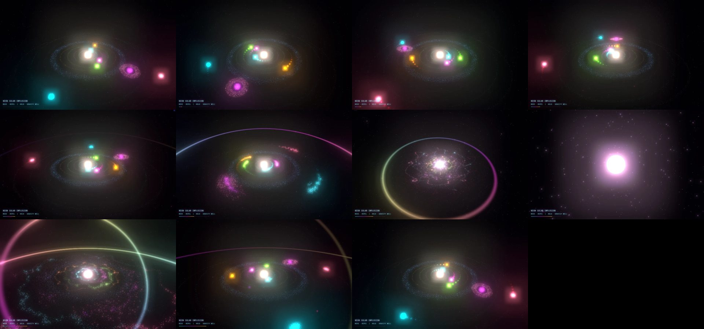
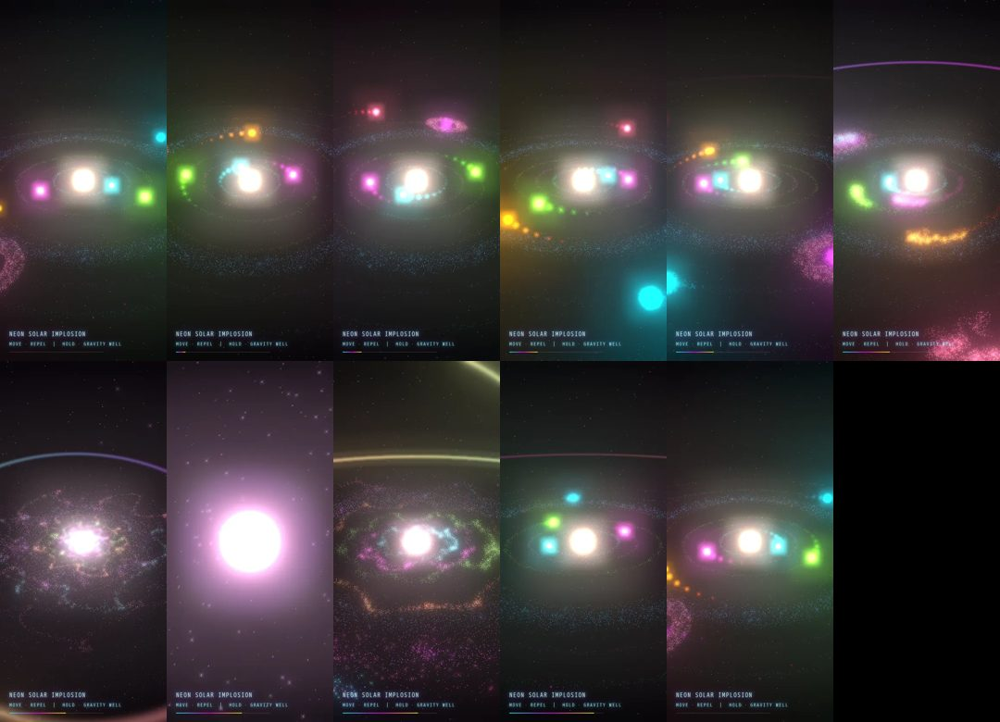

Baseline
$1.08 · 5.0 minThe prompt exactly as typed, no plugin.


Phone frames

desktop: seamless loopphone: seamless loop99performance 100accessibility 93best practices 90seo
Open it live ↗ index.html
threejs/neon-implosion
Both sides got exactly this prompt. The plugin's turn 1 is sent exactly what the baseline was sent, checked from the transcripts, so it's a second plain sample. The plugin passes only if its final beats both.
Open it and watch several loops at desktop and phone sizes. It must render without errors, loop seamlessly every 10 seconds with no visible jump, and hold a smooth frame rate. Rubric: how vivid and striking it is, whether it clearly reads as a solar system imploding into particles, and craft (colour, glow, motion, timing).
The prompt exactly as typed, no plugin.


Open it live ↗ index.html
Replay the session in the terminal at the top of the page, or read the full transcript with every tool call on GitHub.